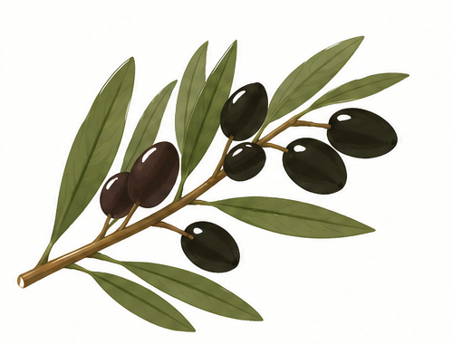
Bois d’olive noir
- Strate
- Arborée
- Espèce
- Bois d’olive noir (Olea lancea)
- Hauteur adulte
- 8 à 10 m
- Source
- Daupi
- Nb de plants
- 3
- Pourquoi ce choix ?
- Très résistant au vent et à la sécheresse.
Étude de faisabilité · 2026
Réflexion sur la conception d'une haie brise-vent et d'un corridor écologique, adaptée aux conditions du site et à la biodiversité locale.
Observer les conditions et préciser le rôle attendu de la haie.
Avant de commencer le chantier, il est important de réaliser une analyse approfondie du terrain et des conditions environnantes. Cette étape permet d'anticiper les contraintes et d'orienter les choix d'aménagement.
L’ombre tombe vers l’ouest : la parcelle sera ombragée le matin, mais plus exposée l’après-midi. Le soleil se lève à l’est à l’île de la Réunion. Cette orientation est un premier repère à confirmer par l'observation du terrain.
Observer les zones d’ombre à différents moments de la journée avant de fixer l’emplacement des végétaux.
Une haie peut protéger du vent, délimiter un espace, améliorer le paysage ou contribuer à la continuité écologique.
Pour ce projet, nous retenons deux objectifs complémentaires : protéger la parcelle du vent et créer un corridor écologique. Le choix des végétaux devra donc répondre aux conditions locales et offrir des ressources à la faune.
Traduire les objectifs en choix d'implantation et de végétaux.
La zone disponible est limitée à 3 m de largeur. Après comparaison de plusieurs schémas, nous avons retenu une plantation en quinconce pour organiser les plants en plusieurs rangs décalés.
Les végétaux les plus hauts sont placés au centre. Cette organisation vise à répartir les volumes et à obtenir une haie protectrice, tout en évitant une structure trop compacte pour préserver le passage de la faune.
Le quinconce décale les plants d’un rang à l’autre. Le plan définitif devra préciser le nombre de rangs et les distances de plantation.
La préparation doit prendre en compte le terrain, le climat et les conditions environnantes. Il faut également repérer les réseaux publics — assainissement, eau potable et électricité — et se renseigner sur les règles locales d'aménagement.
L'accès des machines et des engins doit être prévu en amont pour organiser les interventions et limiter les difficultés pendant les travaux.
Le projet prévoit 11 plants en strate arborée, 9 en strate intermédiaire et 12 en strate basse, soit 32 plants au total.

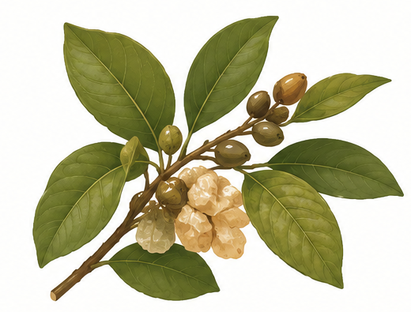
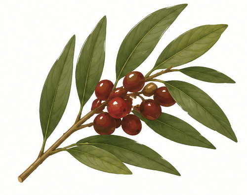
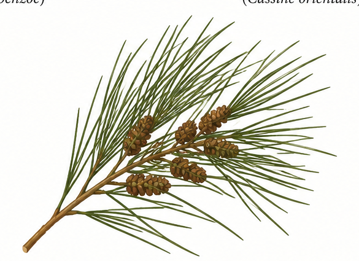
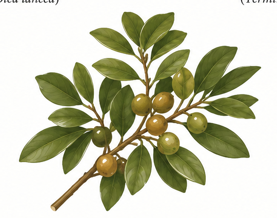
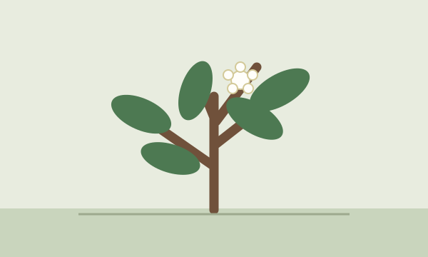
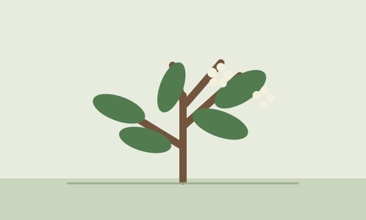
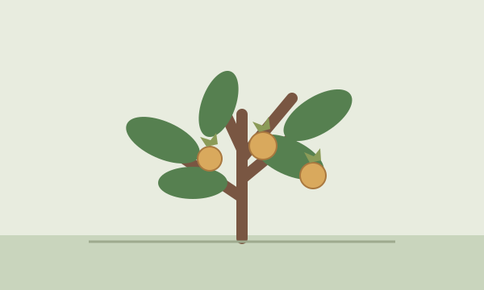
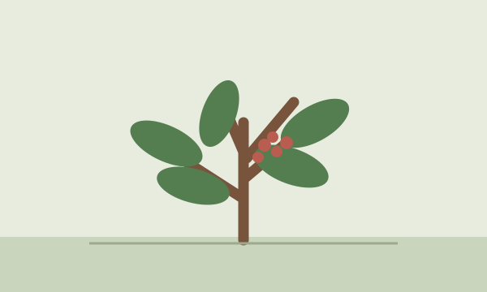
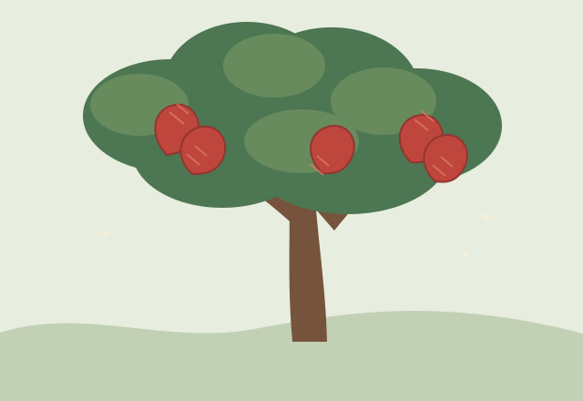
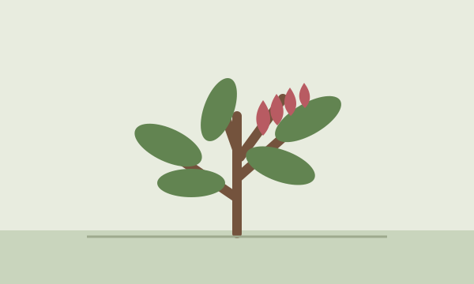
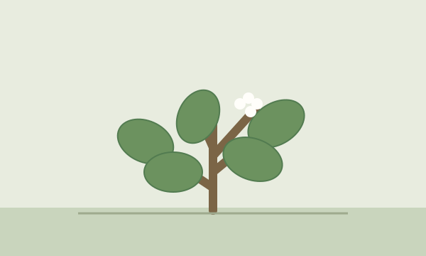
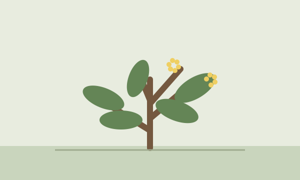
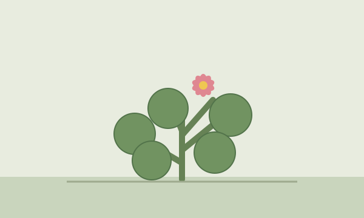
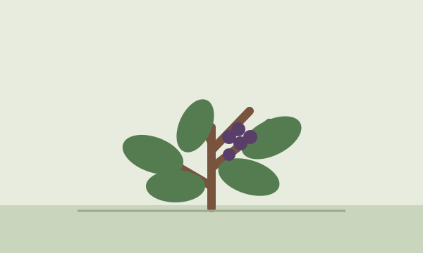
À vérifier avant la plantation : confirmer les hauteurs, l’adaptation au site et le caractère non envahissant des espèces auprès de références locales, notamment du Conservatoire botanique national de Mascarin pour La Réunion.
Rassembler les repères utiles avant de passer au chantier.
Les choix de conception sont résumés ici pour faciliter la restitution. Ils restent à confronter aux observations et aux références locales.
Deux objectifs guident le choix des végétaux et l’organisation des strates.
Le plan final précisera le nombre de rangs, les distances et la position des plants.
Vérifier l’adaptation au site et le caractère non envahissant avant tout achat.
Une fois les plans, les végétaux, les réseaux et les contraintes étudiés, le projet peut être préparé pour sa réalisation. Le budget et les modalités de commande font aussi partie des décisions à anticiper.
La zone mesure 3 m de largeur sur 25 m de longueur, soit une surface de 75 m². Le projet prévoit 32 plants au total : 11 en strate arborée, 9 en strate intermédiaire et 12 en strate basse. Leur espacement et leur implantation restent à préciser sur le plan définitif.
Les quantités prévues sont de 11 arbres, 9 plantes en strate intermédiaire et 12 plantes en strate basse. Le plan de plantation précisera les positions et les distances entre chaque plant.
Préparer le terrain, planter dans de bonnes conditions et assurer le suivi des végétaux.
Pour la zone de 75 m² et les 32 plants prévus, voici un ordre de travail indicatif pour une équipe de deux personnes. Les durées peuvent varier selon l’état du sol et la météo.
Travail : vérifier l’accès, repérer les réseaux et dégager la zone.
Matériel : plan, piquets de repérage, gants, chaussures de sécurité et trousse de premiers secours.
Travail : désherber, retirer les déchets et ameublir la terre aux emplacements de plantation.
Matériel : houe, bêche, fourche-bêche, râteau, brouette et sacs pour les déchets.
Travail : mesurer la bande de plantation, tendre un cordeau et marquer les positions en quinconce selon le plan.
Matériel : plan, mètre, cordeau, piquets et maillet.
Travail : creuser les trous, installer les 32 plants, reboucher sans enterrer le collet et tasser légèrement.
Matériel : bêche, transplantoir, seaux, plants et eau.
Travail : arroser après la plantation, poser un paillage, ranger le chantier et vérifier les plants.
Matériel : arrosoir ou tuyau, paillage, râteau et sacs pour les déchets.
Travail : contrôler l’humidité du sol et la reprise, désherber, arroser si besoin et remplacer les plants morts.
Matériel : carnet de suivi, arrosoir, houe et plants de remplacement si nécessaire.
À La Réunion, je choisis le début de la saison des pluies, généralement entre novembre et janvier. Les pluies aident les jeunes racines à s’installer et favorisent la reprise des plants, tout en limitant les arrosages.
Cette période correspond aussi à la saison cyclonique : je vérifie donc les prévisions et je reporte la plantation en cas de fortes pluies, de vents violents ou de sol détrempé.
Les principaux risques sont les coupures avec les outils tranchants, les blessures lors du déplacement de charges lourdes et les coups de chaleur liés au soleil.
Je porte des chaussures de sécurité, des gants et des vêtements adaptés, ainsi qu’un chapeau ou une casquette. Je vérifie l’état des outils avant de les utiliser, je manipule les charges avec précaution et je bois régulièrement de l’eau. En cas de forte chaleur, je prévois des pauses à l’ombre.
La première année, j’arrose régulièrement, surtout pendant les premières semaines et les périodes sèches, en adaptant l’arrosage aux pluies. Je désherbe autour des plants, maintiens le paillage et vérifie leur reprise.
Les années suivantes, je continue à désherber et j’arrose en cas de sécheresse. Je contrôle l’état de la haie, taille seulement si nécessaire et remplace les plants qui n’ont pas repris.